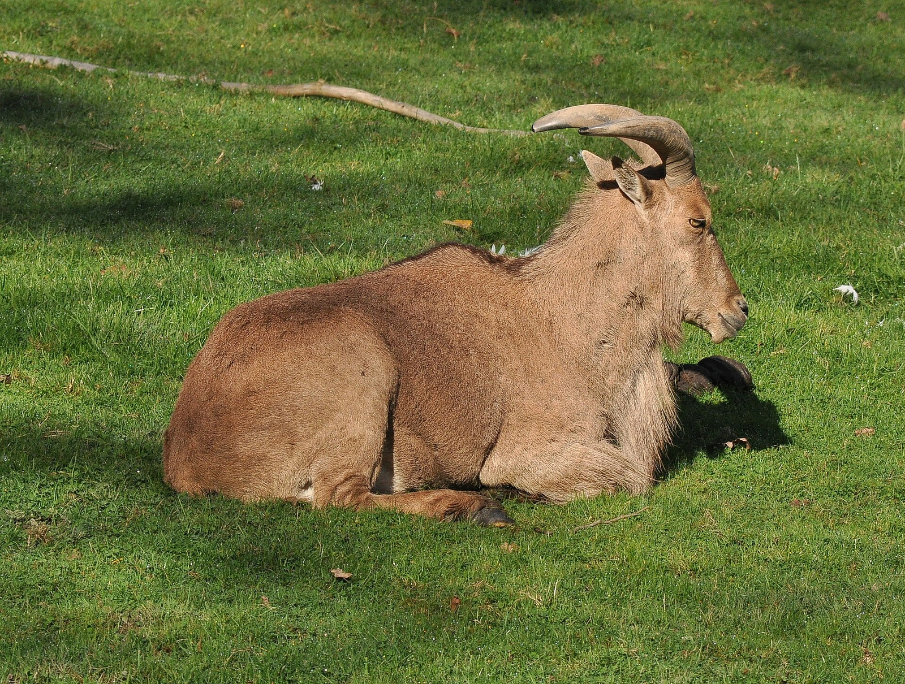
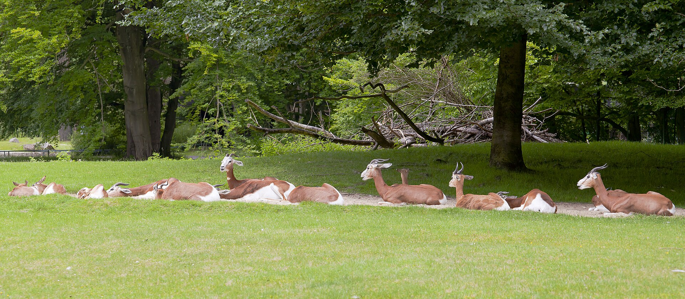
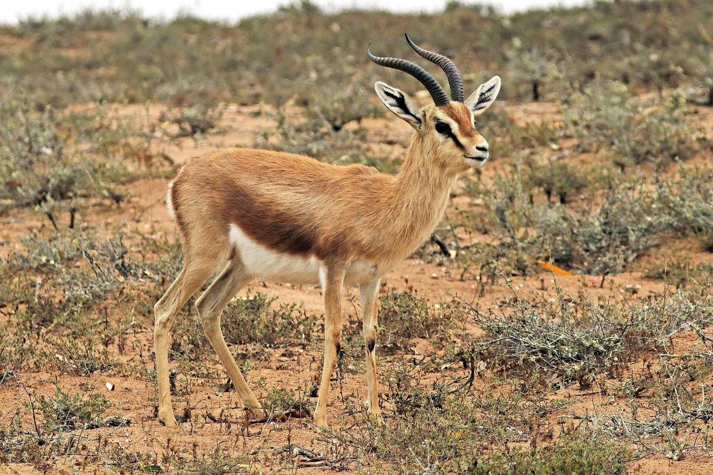

Extinct in the wild since the 1980s. Bouhedma started with captive-bred animals held in fenced grounds, then released them into open range: loose herds now cross the plain between the water points on their own.
Reintroduced · monitored daily
Reintroduction & monitoring
Bouhedma is where Tunisia brings back the large animals that hunting and drought removed from the landscape. The programme pairs reintroduction with protection.
Extinct in the wild since the 1980s. Bouhedma started with captive-bred animals held in fenced grounds, then released them into open range: loose herds now cross the plain between the water points on their own.
Reintroduced · monitored daily

Returned to the rocks of Djebel Bouhedma, where a managed reproduction enclosure supports the wild population on the jebel slopes. Sightings are sensitive: their coordinates are never published.
Reintroduced · jebel slopes

The largest gazelle of the Sahara and the most endangered of the three. Captive-bred animals were released in the 1990s; small family groups now graze the plain and are followed individually.
Reintroduced 1990s · CR

The small gazelle of the steppe, free-ranging all year. It lives on acacia pods and browse and depends on the water points the park keeps open through the dry season.
Free-ranging population

Exterminated in Tunisia, then reintroduced to the open plain, where loose flocks run free and nest in the sand. Chicks are checked after the first rains and adults are counted with the other large herbivores.
Reintroduced · open plain

The tree that makes the savanna. Its pods feed oryx, gazelles and Barbary sheep through the dry season, and young stands are fenced off until they can survive grazing and browsing again.
Habitat · protected tree